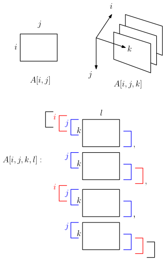

5 Image analysis tasks
Given an image, there are many possible machine-learning tasks. Common examples include image classification, image segmentation, and object detection. Image classification identifies the class or classes present in the image, but does not tell us where they occur. Image segmentation and object detection also involve localisation within the image. Segmentation assigns labels to individual pixels, while object detection identifies individual objects, usually by assigning each a class label and bounding box. The table below summarises these tasks in more detail.
| Task | Question | Typical output |
|---|---|---|
| Image classification | Which class or classes are present? | Class labels or scores for the whole image |
| Semantic segmentation | Which class does each pixel belong to? | A class label for every pixel |
| Instance segmentation | Which pixels belong to each separate object? | A separate mask and class label for each object |
| Object detection | Which objects are present, and where are they? | A class, bounding box and confidence score for each detected object |
Here a class or category is a type, such as person, while an object or instance is one particular occurrence of that class. A class label is the name or numerical code used to record the category. An annotation records information about an image or object, such as a class label, bounding box, pixel mask or track ID. During supervised training, this information provides the target that the model is trained to predict.
For our basketball application, image classification could tell us that a frame contains people, but not where they are or how many are present. Semantic segmentation could identify the pixels belonging to the person class, but would not by itself distinguish the individual people. Instance segmentation could distinguish them, while object detection represents each candidate person using a separate bounding box. We focus on object detection because these boxes provide a simple input to the tracking methods considered later. Other outputs, such as instance masks or pose keypoints, could support alternative approaches.
5.1 Images as arrays and tensors
This section revisits the image-array, sliding-window and filtering examples from the ENGSCI 205 lecture notes, together with the convolutional network from Lab 5. We use these ideas here to understand the inputs and intermediate computations of an object detector.
From the camera-model perspective, an image is a measurement of a physical scene. For computational purposes, a digital image is usually represented as a rectangular array of pixel values. A greyscale image contains one value at each pixel, while a colour image typically contains three values representing different colour channels.
For example, frame 50 of our basketball video is stored by OpenCV as a NumPy array with shape
(720, 1280, 3)and data type uint8. This represents 720 rows, 1280 columns and three colour channels, with each channel value stored as an integer from 0 to 255. OpenCV places the channels in blue–green–red (BGR) order, while image-display tools such as Matplotlib usually expect red–green–blue (RGB) order.

The order of these dimensions also differs between software libraries:
| Representation | Typical shape | Colour order |
|---|---|---|
| OpenCV-loaded image (NumPy array) | (height, width, channels) |
BGR |
| Matplotlib display image | (height, width, channels) |
RGB |
| PyTorch image tensor | (channels, height, width) |
Usually RGB |
| PyTorch batch of images | (batch, channels, height, width) |
Usually RGB |
NumPy indexes an image by row and then column. Thus, for integer image coordinates \((x,y)\), the corresponding pixel is accessed as image[y, x], not image[x, y].
In PyTorch, the main multidimensional-array data structure is called a tensor. You used image tensors in ENGSCI 205 when working with MNIST and convolutional neural networks.

(height, width), an image (channels, height, width), and a batch (batch, channels, height, width).